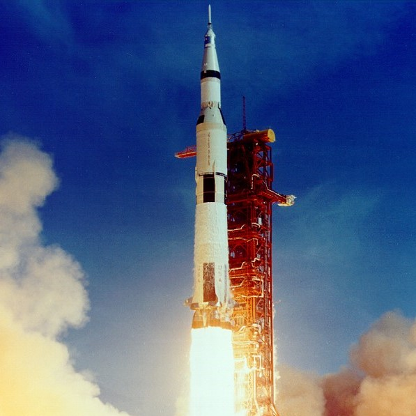
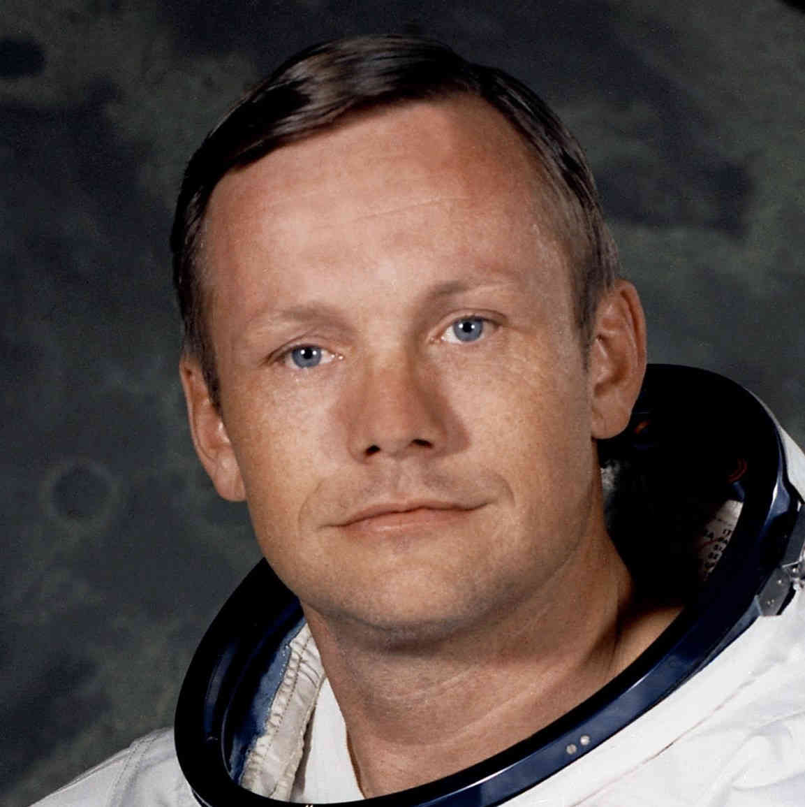
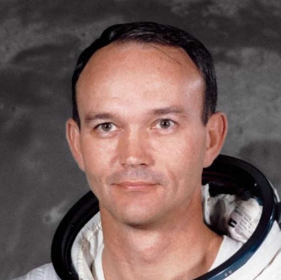
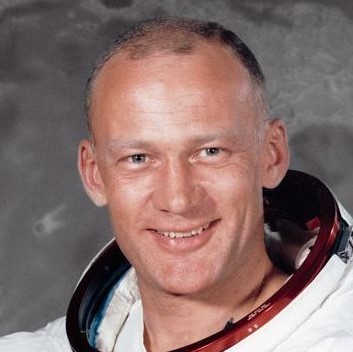
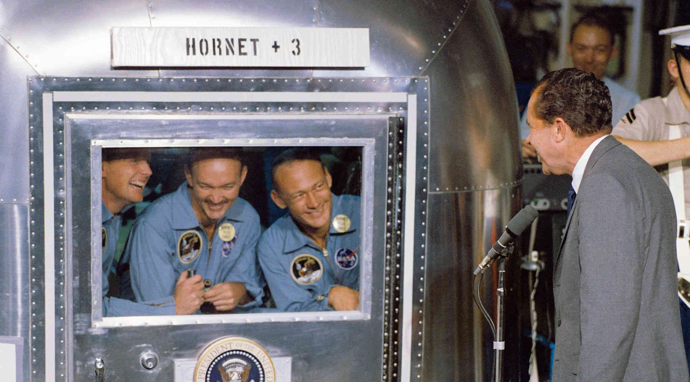

Source: NASA.
Apollo 11
Apollo 11
The first spaceflight that landed humans on the Lunar surface was Apollo 11. Landing on , the Saturn V rocket carried three astronauts whose names the world would never forget:

Neil A. Armstrong
Commander

Micheal Collins
Command Module Pilot

Edwin "Buzz" E. Aldrin Jr.
Lunar Module Pilot
About Apollo 11
Apollo 11 was a mission to the Moon that lasted in total, and brought back 21.6kg[1] of Moon samples. At this point in time, scientists had no idea whether or not there was life on the Moon, and these samples were the foundations of proving that there was no life on the Moon. Once the three astronauts returned to Earth, they were placed in a mobile quarantine for a total of ! This was to ensure they brought no foreign life forms from the Moon back to Earth.

Why explore Space?
The motivation behind space exploration, including the Apollo prorgams, was further enhanced by the Cold War[2]. The Cold War was not actually a war, but was a period in recent history in which there was heightened tensions between the US (United States) and the USSR (now known as Russia). There was a space race between the two superpowers, with each one trying to reach the Lunar surface before the other. In the end the US won, but it was fair to say that both sides had used eachother's newly developed technology to get their - in a sense, it was a joint effort!
Cape Kennedy
Apollo 11 launched from Cape Kennedy (now known as Cape Canaveral) in , and many spacecraft since then have launched from the same location. Cape Kennedy is known for its spacecraft launches, but do you know how far away it is? Using the tool below, you can see where Cape Kennedy is located, and your distance to it.
References
- Lunar and Planetary Institute. Apollo 11 Lunar Samples. [Online]. 2022. [Accessed 1 March 2022]. Available from: https://www.lpi.usra.edu/lunar/missions/apollo/apollo_11/samples/
- Llewellyn, J. and Thompson, S. The Space Race. [Online]. 2020. [Accessed 1 March 2022]. Available from: https://alphahistory.com/coldwar/space-race/
- NASA. 2019. Apollo 11: Neil Armstrong's Reflections on NASA's Mission to Land on the Moon. [Online]. [Accessed 30 April 2022]. Available from: https://www.youtube.com/watch?v=22PBC-YgWYM
- NASA. 2021. NASA Remembers Apollo Astronaut Michael Collins. [Online]. [Accessed 30 April 2022]. Available from: https://www.youtube.com/watch?v=E4mnpHvK8yM
- NASA. 2019. Tribute to Apollo 11 Astronaut Buzz Aldrin. [Online]. [Accessed 30 April 2022]. Available from: https://www.youtube.com/watch?v=d-ygJpehWLQ
- Ye, Q. 2022. 7Timer!. [Online]. [Accessed 4 May 2022]. Available from: https://www.7timer.info/